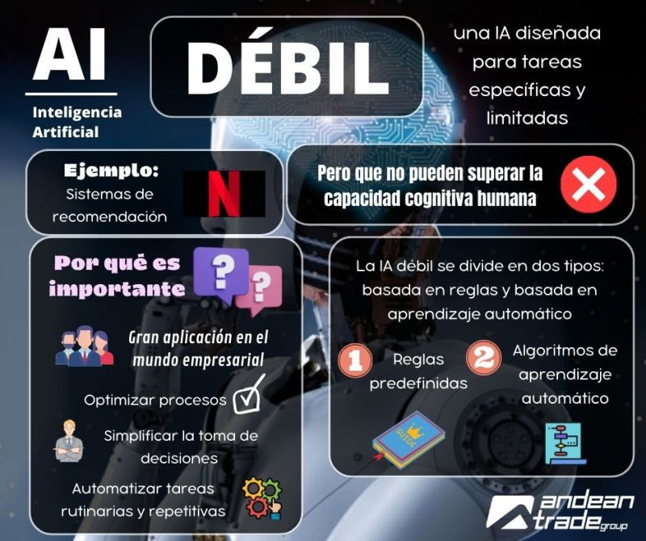
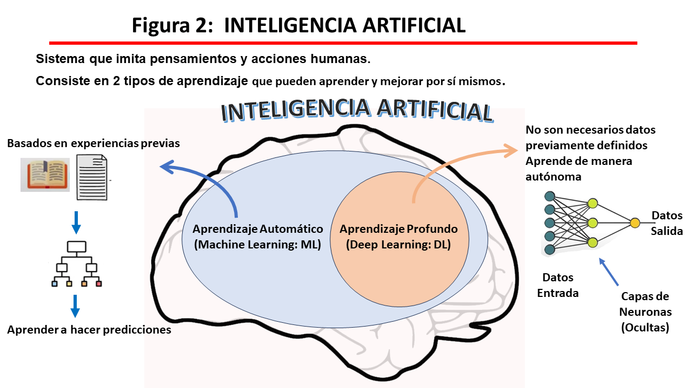

Tipos de Inteligencia Artificial
IA Débil
La IA débil está diseñada para realizar una tarea específica. No tiene consciencia ni emociones, y se limita a lo que ha sido programada para hacer. Un ejemplo es el software de reconocimiento de voz.
IA Fuerte
La IA fuerte o general tiene la capacidad de realizar cualquier tarea cognitiva humana, es decir, puede aprender, razonar, adaptarse y pensar de manera autónoma. Aún no se ha logrado desarrollar una IA de este tipo.
IA Superinteligente
La IA superinteligente sería una forma de inteligencia que supera con creces a la humana en todos los aspectos, incluyendo creatividad, toma de decisiones y habilidades sociales. Este tipo de IA es teórico y aún está en fases muy tempranas de estudio.
